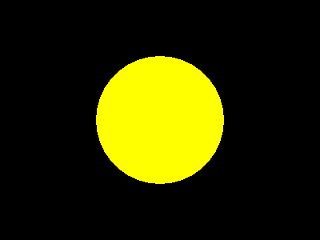
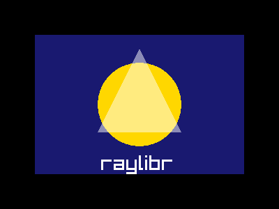

Installation
raylibr is not yet on CRAN. Install the development version from GitHub:
pak::pak("jeroenjanssens/raylibr")raylibr works on macOS, Linux, and Windows. It also runs in the browser via webR.
Your first image
The quickest way to see raylibr in action is
raylibr_screenshot(). It creates a hidden window, runs your
drawing code, and returns the result as an image:
raylibr_screenshot(function() {
draw_circle(200L, 150L, 80.0, "yellow")
})
The default canvas is 400x300 pixels with a black background. Everything you draw appears on top.
You can compose multiple shapes in a single screenshot:
raylibr_screenshot(function() {
draw_rectangle(50L, 50L, 300L, 200L, "midnightblue")
draw_circle(200L, 150L, 60.0, "gold")
draw_triangle(
c(200, 70), c(140, 190), c(260, 190),
color_alpha("white", 0.5)
)
draw_text("raylibr", 145L, 220L, 30L, "white")
})
The game loop
Raylib renders frame by frame: each iteration of a loop draws one frame to the screen. This is different from R’s typical batch execution model.
The classic pattern looks like this:
init_window(800L, 600L, "My Game")
set_target_fps(60L)
while (!window_should_close()) {
begin_drawing()
clear_background("black")
draw_text("Hello!", 300L, 280L, 40L, "white")
end_drawing()
}
close_window()For code that needs to work both on desktop and in the browser (via
webR), use run_game_loop() instead of a while
loop:
run_game_loop(
init_fn = function() {
init_window(800L, 600L, "My Game")
set_target_fps(60L)
},
update_fn = function() {
begin_drawing()
clear_background("black")
draw_text("Hello!", 300L, 280L, 40L, "white")
end_drawing()
},
cleanup_fn = close_window
)Conventions
raylibr follows a few consistent conventions:
snake_case names. Raylib’s DrawCircle()
becomes draw_circle().
Integers need L. Width, height, pixel
coordinates, and font sizes are integers. Write 200L, not
200.
R color names work everywhere. Any function that
takes a color accepts R’s 657 built-in color names: "red",
"steelblue", "grey90", etc. See the Colors guide for details.
Vectors map to R numerics. A Raylib
Vector2 is c(x, y), a Vector3 is
c(x, y, z), and a Vector4 is
c(x, y, z, w). A Raylib Matrix is a 4x4 R
matrix.
Structs
Some Raylib types have dedicated constructors:
rec <- rectangle(10, 20, 300, 200)
rec$width
#> [1] 300
cam <- camera_3d(c(4, 4, 4))
cam$fovy
#> [1] 70
bb <- bounding_box(c(-1, -1, -1), c(1, 1, 1))
bb$min
#> x y z
#> -1 -1 -1Other constructors include color(), ray(),
camera_2d(), ray_collision(), and
transform().
Check types with predicates:
is_rectangle(rec)
#> [1] TRUE
is_color("red")
#> [1] TRUEEnums
Raylib enums are available as named lists:
flag$window_resizable
#> [1] 4
key$space
#> [1] 32
mouse_button$left
#> [1] 0
camera_mode$orbital
#> [1] 2Use them with functions like
set_config_flags(flag$window_resizable) or
is_key_pressed(key$space).
What’s next
- Drawing 2D Shapes — circles, rectangles, lines, and more
- Drawing 3D — cubes, spheres, and cameras
- Colors — R color names, transparency, HSV, and blending
- Text & Fonts — rendering text and loading custom fonts
- Images & Textures — loading, generating, and drawing images
- Input — keyboard, mouse, and gamepad
- Audio — sound effects and music
- Camera — 2D and 3D camera systems
- Shaders — GLSL shaders and post-processing
- raygui — immediate-mode GUI widgets
- raymath — vector, matrix, and quaternion math
- webR — running raylibr in the browser